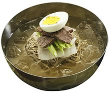
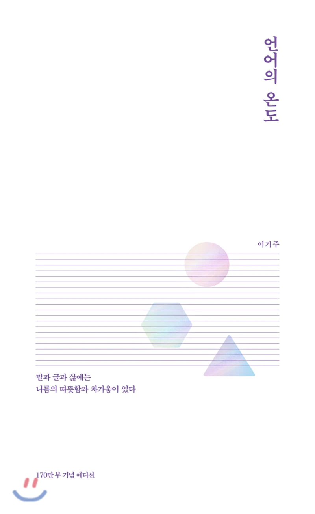

- Favorite Food : 냉면
- 제가 더위를 심하게 타는 체질이라서 음식들도 죄다 차가운 것만 좋아하는데요,
그 중에서 가장 좋아하는 게 냉면이에요! 새콤하고 시원해서 잘 즐기는 음식입니다
사실... 냉면은 삼겹살 집에서 먹는 게 맛있다고 생각하긴 해요ㅎㅎ..

- Favorite Music : Don't Call Me_SHINee
- 요즘 빠져서 과제할 때 이 노래만 듣고 있어요ㅎㅅㅎ
노동요로 추천합니다.. 들으면 힘나요

- Favorite Book : 언어의 온도
- 고등학생 때 동생이 사왔는데 제가 대신 읽은 책(ㅋㅋ) 입니다.
이 책을 보고 말할 때 부드러운 언사를 쓰려고 노력하게 된 것 같아요.. 물론.. 노력 만큼 고쳐지지 않았지만..
한 번쯤 읽어보시길 추천합니다!

- Favorite Flower : Rose
- 예전에 절 닮은 꽃이라면서(남자 아닙니다..^^) 핑크색 장미를 받아본 적이 있는데,
그 때 기억이 좋아서 아직까지 좋아하고 있는 꽃이랍니다! 아래는 장미에 대해 소개한 페이지 입니다~
위 페이지 이동

- Favorite Season : Winter
- 제가 겨울에 태어나서 겨울을 좋아합니다!
물론 눈이 와서도 좋은 것도 한 몫 합니다^ㅅ^
- Favorite Movie : Harry Potter Series
- 사실 수능이 끝나고 나서야 제대로 해리포터를 보기 시작했는데,
이 시리즈 특유의 신비로움과 느낌이 좋아서 요즘 책으로도 보고 있답니다ㅎㅎ
원래도 판타지 영화를 좋아하시는 분들은 보시면 재밌으실 것 같아요! 아래는 해당 영화를 소개한 페이지 입니다~
위 페이지 이동